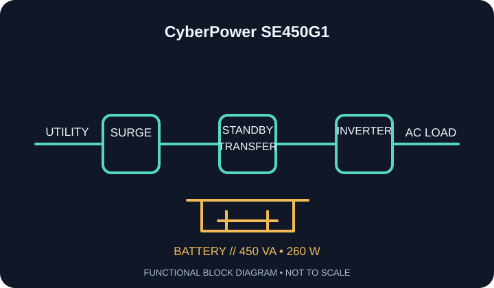

[ STANDBY / OFFLINE UPS // IDENTIFIED MODEL ]
CyberPower SE450G1
CyberPower North American standby UPS: 450 VA / 260 W. Eight NEMA 5-15R outlets arranged in battery-backup + surge and surge-only groups; use the SE450G1 outlet labels/manual to identify each group. This record is limited to the named model and regional variant; confirm the complete unit label and matching manufacturer documentation.

ARCHIVAL IDENTIFICATION: Record full SKU/suffix, input and output labels, serial/date code, hardware revision, battery part/age, condition, accessories and the manual revision used. Similar model names do not establish electrical equivalence.
Exact model specifications
| Manufacturer / catalog topology | CyberPower; standby (offline) UPS. The inverter normally remains out of the utility path and assumes the load after a transfer event; it is not line-interactive AVR or online double-conversion. |
|---|---|
| Capacity / regional input | 450 VA apparent-power limit / 260 W real-power limit; North American 120 V AC nominal input and 60 Hz service. Check the full nameplate for accepted input range and regional approval; VA and W limits both matter. |
| Output / waveform | 120 V AC North American model, standby/offline topology, simulated-sine-wave output during battery operation. Waveform and transfer tolerances are not inferred across revisions; match the manufacturer specification to the exact suffix. |
| Receptacles / load allocation | Eight NEMA 5-15R outlets arranged in battery-backup + surge and surge-only groups; use the SE450G1 outlet labels/manual to identify each group. Keep critical equipment on the battery-backed group. Never exceed the individual receptacle, total VA or total watt limit; USB charging sockets, if any, are not AC outlets. |
| Battery / replacement / hot-swap | Internal sealed lead-acid battery. Follow model-specific service and end-of-life instructions; the archive makes no hot-swap claim. |
| Runtime limits / test conditions | Use the SE450G1 load-specific runtime data; the product rating is a ceiling, not a runtime estimate. Battery age, charge, load and ambient temperature materially affect hold-up time. Runtime tests should record load watts, battery age/health, charge state, room temperature and test date; do not extrapolate from an empty-unit self-test. |
| Interface / host compatibility | Local status indicator/alarm; no data-management interface is specified for SE450G1. No host communication/shutdown interface is identified for this model; do not infer OS support from CyberPower software used with other UPS families. |
| Protection / scope | Surge protection and battery backup apply only to the receptacles and protection paths labeled for this model. The UPS does not correct an unsafe branch circuit, provide a ground where none exists, or guarantee protection from every transient. |
Safety, service & limits
- Use only on the voltage, frequency and grounded supply shown on the unit label; never defeat grounding, daisy-chain UPS outputs, or connect a generator/alternate source contrary to the matching manual.
- Do not connect laser printers, heaters, motors or other high-inrush loads unless the manufacturer explicitly permits them and the continuous and surge limits are satisfied.
- Do not open an energized enclosure or service an internal battery outside the manual’s procedure. Lead-acid batteries can deliver high fault current and may contain corrosive electrolyte; avoid short circuits and dispose/recycle under local rules.
- Remove damaged units from service if the case, cord, plug, grounding, receptacle, battery or indicators show heat, swelling, leakage, cracking, odor, corrosion or other faults. Follow the manufacturer warnings for shutdown and isolation.
- Battery backup is finite and is not a substitute for safe shutdown, a properly rated circuit, electrical code compliance, or manufacturer instructions. Re-check the outlet map, firmware/software support and nameplate before deployment.
Manufacturer sources and documentation
- CyberPower — CyberPower SE450G1 manufacturer product informationPrimary source for the exact model, nameplate capacity, configuration and downloadable model resources; confirm regional suffix.
- CyberPower manuals and technical support (search exact SE450G1 SKU)Manufacturer documentation/support source. Select the manual or software information for the exact model and revision; this archive is not a substitute for the current instructions.